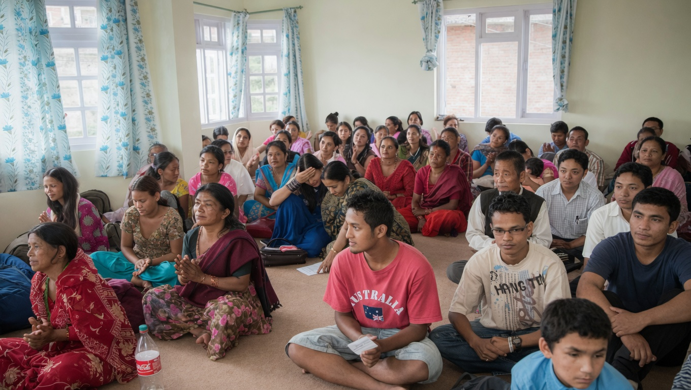
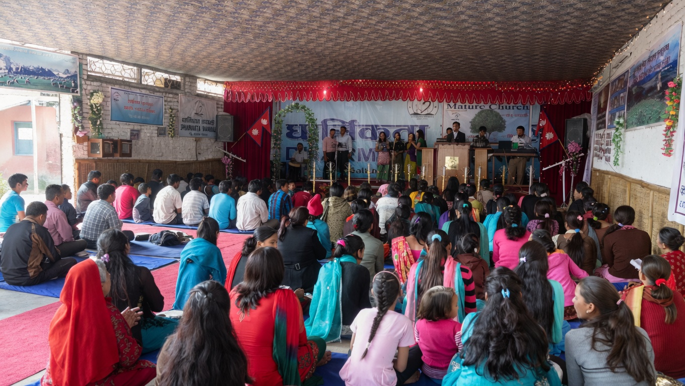
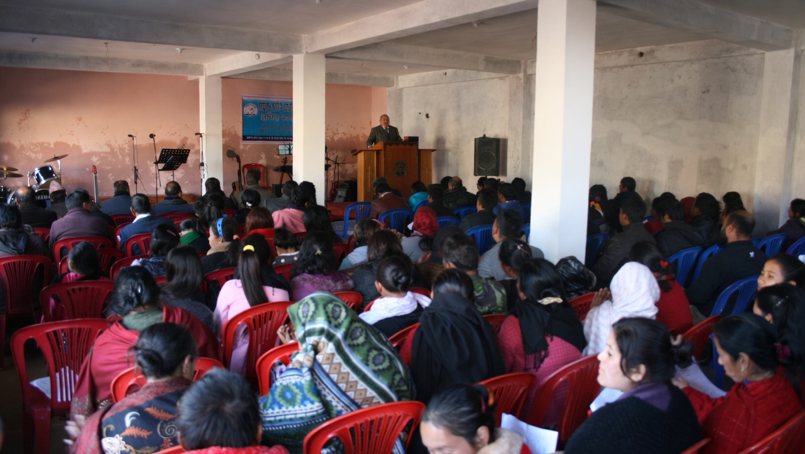
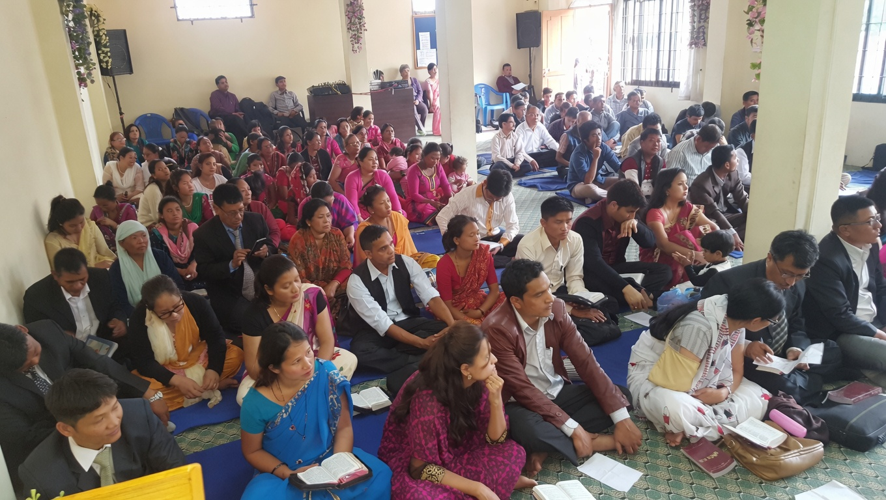

Worship, Discipleship and Service
Dharmikta Mandali is a Christ-centered church that has been nurturing a community of believers through teaching, outreach, and love since 2009. We believe in the unity of believers and the power of prayer to transform lives and communities.
We are committed to spreading the love of Christ through our worship, community outreach, and personal relationships. Our core values guide everything we do.
We love God and our neighbors, embracing all people in the name of Jesus.
We strive to serve our community and meet their spiritual and physical needs.
We believe in the power of the body of Christ coming together in harmony.
Dharmikta Mandali was established in 2009 with 25 believers who gathered in a small rented room in Bhanjyang, Lalitpur. Through continuous prayer, God revealed Proverbs 14:34, which became the foundation for our name — Dharmikta Mandali (Righteousness Church).
Within a month the room was full, so we rented an additional space and joined them. Just two months later we had to expand again as more people joined the fellowship.
As the church continued to grow, we moved to Bhaisepati, where we:
Today we gather freely to worship and serve, continuing the journey that began with prayer and faith.
Dharmikta Mandali is blessed to have multiple branch churches across Nepal and beyond. Each one is committed to sharing the Gospel and serving their local communities.




Throughout the years, we have witnessed God's faithfulness in every step of our journey.